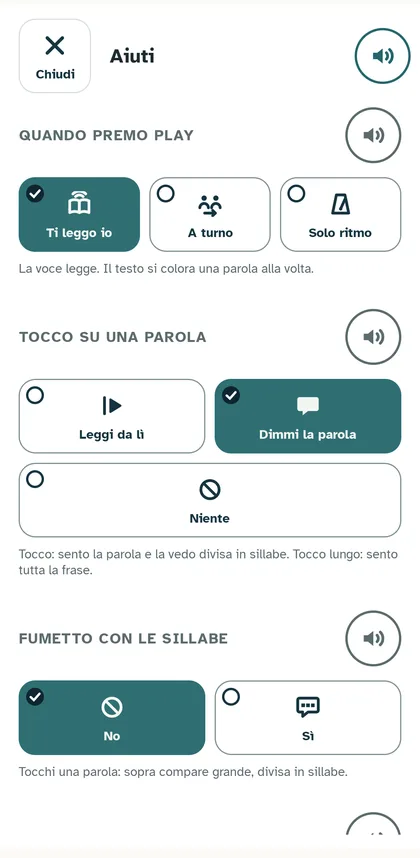
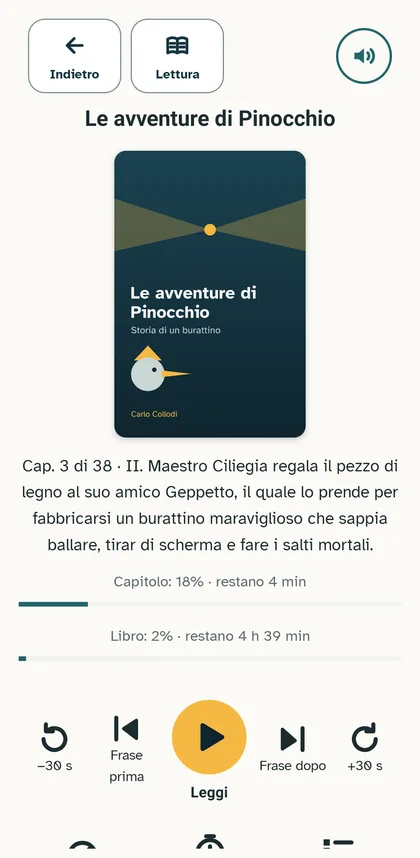
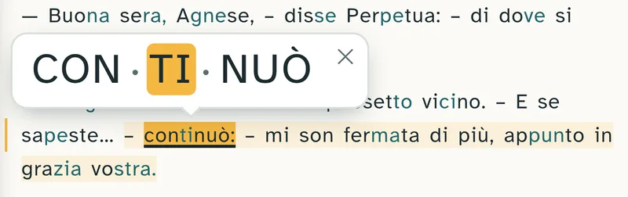

Documentazione
Comunicazione aumentativa (CAA)
Relazione di autovalutazione di Farō Reader 0.4 per Android sulla comunicazione aumentativa e alternativa.
Per le app non esiste una norma CAA da certificare. Per questo abbiamo scritto una lista di controllo nostra: ogni criterio si può verificare, e diciamo come l'abbiamo fatto. La lista ha tre livelli:
- Base: il minimo perché l'app si possa usare guardando i simboli.
- Intermedio: la voce e i messaggi aiutano davvero.
- Completo: vocabolario controllato e prova con le persone.
Un livello è raggiunto quando tutti i suoi criteri, e quelli dei livelli sotto, sono conformi o non applicabili.
In breve
- Obiettivo della 0.4: livello Intermedio. Obiettivo della 1.0: livello Completo.
- Esito: livello Intermedio raggiunto: 18 criteri su 18 conformi (Base e Intermedio). Del livello Completo è conforme 1 criterio su 5.
- Data: 18 ottobre 2026. Versione valutata: 0.4 (versione di prova del 18 ottobre 2026).
- Prove usate: le stesse della relazione WCAG (giro automatico G, foto F, codice C).
Base
| Criterio | Esito | Perché |
|---|---|---|
| B1 Ogni azione ha un simbolo e una parola | C (G, F) | Il giro controlla ogni comando di ogni schermata, nei due orientamenti, su telefono e tablet: nessuno è senza simbolo o senza parola. Chi conosce bene l'app può scegliere "solo simbolo" nel pannello Testo; il predefinito è simbolo e parola. Le righe dell'indice sono un elenco di capitoli, non comandi. |
| B2 Posizione fissa | C (F) | La barra del titolo è uguale in tutte le pagine: pulsanti a sinistra, titolo, altoparlante a destra. I comandi di lettura sono sempre in basso; in orizzontale in una colonna, a destra o a sinistra come scegli. |
| B3 Stesso segno = stessa azione | C (C) | Un simbolo, un significato, in tutta l'app. Nella 0.3 l'altoparlante voleva dire tre cose diverse: ora è solo "leggi questa parte"; la voce ha la testa che parla, la lettura il libro aperto, il codice della licenza la chiave, la ricerca degli aggiornamenti la freccia circolare. |
| B4 Una sola azione principale | C (F) | In ogni schermata solo un pulsante è giallo: Leggi (o Pausa), oppure Riprendi in libreria. |
| B5 Lo stato si vede nel comando | C (F) | Leggi diventa Pausa, con simbolo e parola. La scelta ha il cerchietto con la spunta. L'altoparlante che legge mostra la pausa e un anello che gira. |
| B6 Il colore non è l'unico segnale | C (F) | Guardando le foto in bianco e nero si distinguono scelte, stato e messaggi. |
| B7 Tempo illimitato per rispondere | C (C) | Proposte e domande restano sullo schermo finché rispondi. |
| B8 Si può sempre tornare indietro | C (C) | Ogni finestra ha Annulla o Chiudi. Togliere un libro o cancellare l'audio chiede conferma. |
| B9 Risposta a ogni tocco | C (C) | Tessere, pulsanti e altoparlanti cambiano fondo e bordo mentre li tocchi; con la tastiera hanno un contorno giallo. |
| B10 Aree di tocco di almeno 48 dp | C (G) | Il giro misura ogni comando. |


Ogni comando ha simbolo e parola (B1); la scelta ha la spunta (B5, B6); un solo pulsante giallo per schermata (B4).
Intermedio
| Criterio | Esito | Perché |
|---|---|---|
| I1 Nessuna azione solo a gesti | C (C) | Il pizzico ha la barra della dimensione, lo scorrimento ha frase prima, frase dopo e capitoli, il tocco sulla parola ha il pannello Aiuti. |
| I2 Ogni comando si può spiegare | C (G) | L'altoparlante in ogni pagina, sezione, pannello e finestra legge, uno dopo l'altro, titolo, testi e pulsanti di quella parte. Mentre legge, ogni elemento si illumina di giallo. Il giro tocca ogni altoparlante e controlla che la voce parta e si fermi. |
| I3 Messaggi ascoltabili | C (C) | Proposte ed errori hanno il loro altoparlante. Gli avvisi che spariscono da soli ripetono quello che è già scritto nella pagina. |
| I4 Tre tipi di messaggio distinti | C (C) | Avviso, proposta ed errore hanno ciascuno la sua icona e la sua forma, non solo il colore. |
| I5 Proposte con pulsanti veri | C (F) | Ogni proposta ha pulsanti a tessera con simbolo e parola; niente azioni nascoste nel testo. |
| I6 Frasi corte e parole comuni | C (C) | Tutte le scritte dell'app sono controllate in automatico a ogni modifica: frasi di 15 parole al massimo e indice Gulpease di almeno 80 per i testi lunghi. |
| I7 Gli errori dicono cosa fare | C (C) | "Per vedere la Biblioteca serve internet", non un codice d'errore. |
| I8 Testi e bollini leggibili dalla voce | C (G) | Anche le schede delle Impostazioni e i bollini hanno l'altoparlante. |

Il fumetto con le sillabe: la parola toccata compare grande, divisa in sillabe, e la voce la legge una sillaba alla volta.
Completo (per la 1.0)
| Criterio | Esito | Perché |
|---|---|---|
| C1 Solo simboli Farō | C (C) | 58 simboli disegnati da noi, nello stile dei pittogrammi CAA: tratto spesso, forme piene, pochi dettagli. Nessuna icona di sistema resta nell'app, nemmeno nella notifica. |
| C2 Vocabolario controllato | N | Manca ancora il glossario: una sola parola per ogni cosa, controllata in automatico. |
| C3 Prova con le persone | N | Non ancora fatta. Vogliamo farla con almeno un ragazzo dislessico e un logopedista. |
| C4 Etichette leggibili al 200% | NV | Non ancora provato con il carattere di sistema al massimo. |
| C5 Simboli riconoscibili senza leggere | NV | Si misura durante la prova con le persone. |
I simboli
Tutti i simboli dell'app, ciascuno con la sua parola:
- A turno
- Aggiungi
- Aiuti
- Ascolta
- Attesa
- Audiolibro
- Avanti di 30 secondi
- Avviso
- Cancella
- Capitoli
- Cerca adesso
- Cerca da solo
- Codice
- Chiudi
- Comandi a destra
- Comandi a sinistra
- Leggi da lì
- Documento
- Segno e parola
- Faro
- Fatto
- Frase dopo
- Frase evidenziata
- Frase prima
- Attenua il resto
- Fumetto con le sillabe
- Giorno
- Impostazioni
- Indietro
- Indietro di 30 secondi
- Leggi
- Dettagli
- Lento
- Lettura
- Ti leggo io
- Rotazione bloccata
- Rotazione libera
- Memoria
- Niente
- Cambia nome
- Notte
- Parola
- Pausa
- Prepara
- Ampia
- Molto ampia
- Normale
- Stretta
- Solo ritmo
- Segnala
- Seppia
- Parola in sillabe
- Tutto in sillabe
- Solo segno
- Testo
- Spegnimento
- Velocità
- Voce
Cosa manca ancora
- Glossario delle parole dell'app (C2).
- Prova con le persone e riconoscimento dei simboli senza parole (C3, C5).
- Carattere al 200% (C4).
Se un simbolo non si capisce o una parola è difficile, scrivicelo.